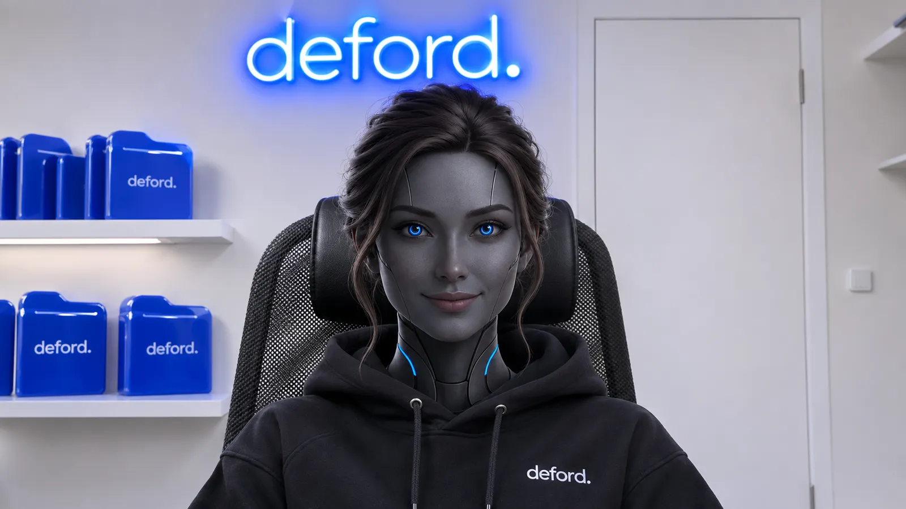
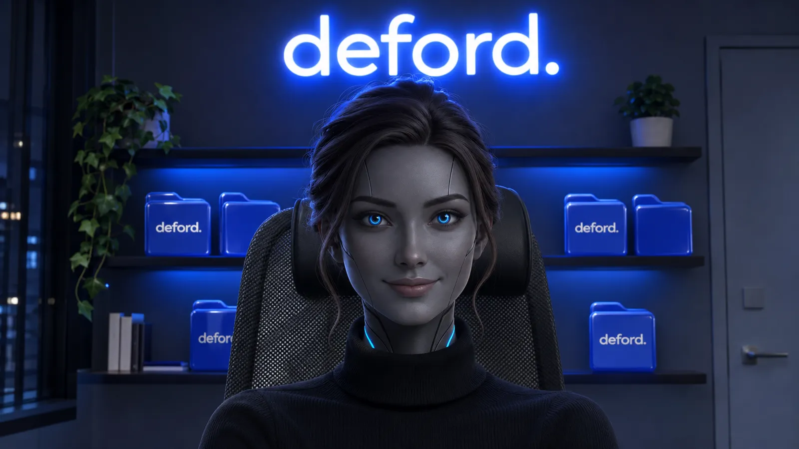

Ева та же, что сейчас стоит в звонке (A3, графитовый андроид). Её одели и посадили в кресло как у тебя на созвоне, за спиной неоновый deford. и синие папки. Напиши номер; можно два-три на доработку. Выбранный поставлю плиткой Евы на meet.deford.ru.

01 Светлый офис как у Артёма: белая стена, дверь, синий неон, полка с папками. Чёрное худи deford.

02 Вечер, темно: белый неон с синим свечением, подсвеченная полка папок. Чёрная водолазка